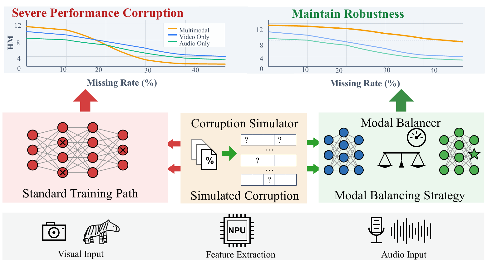
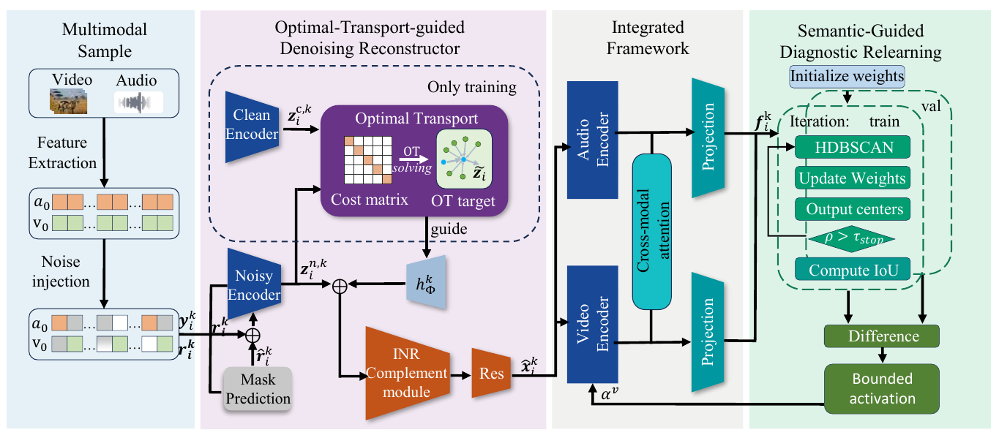
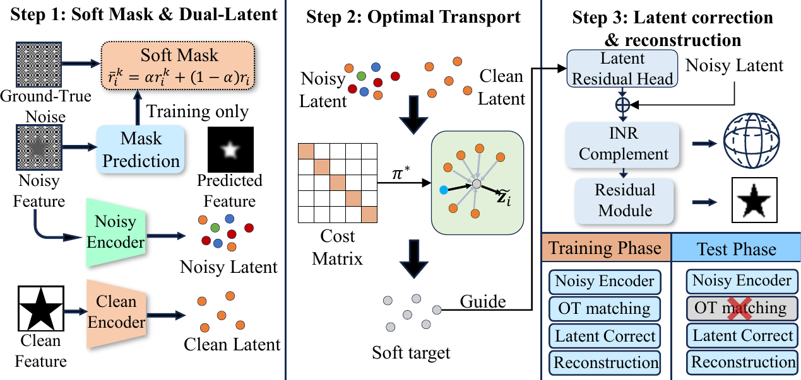
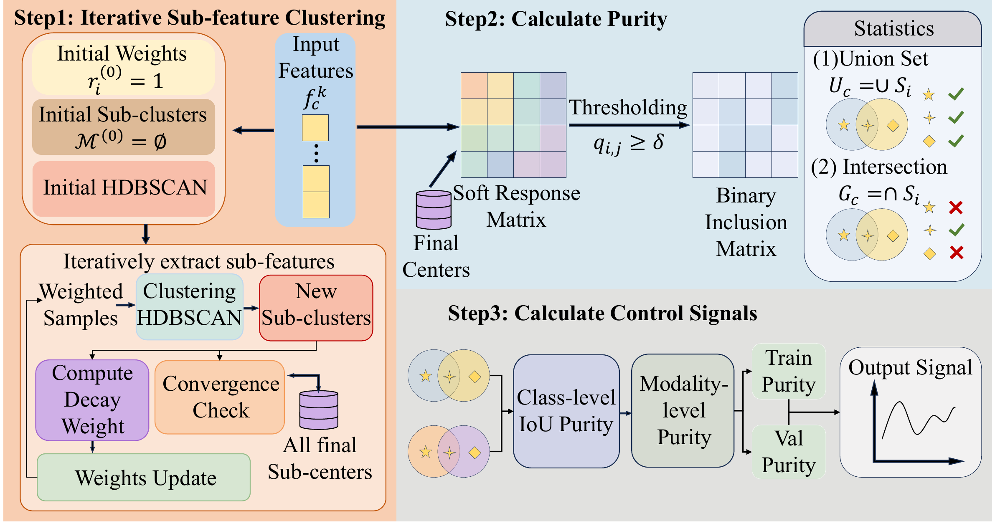
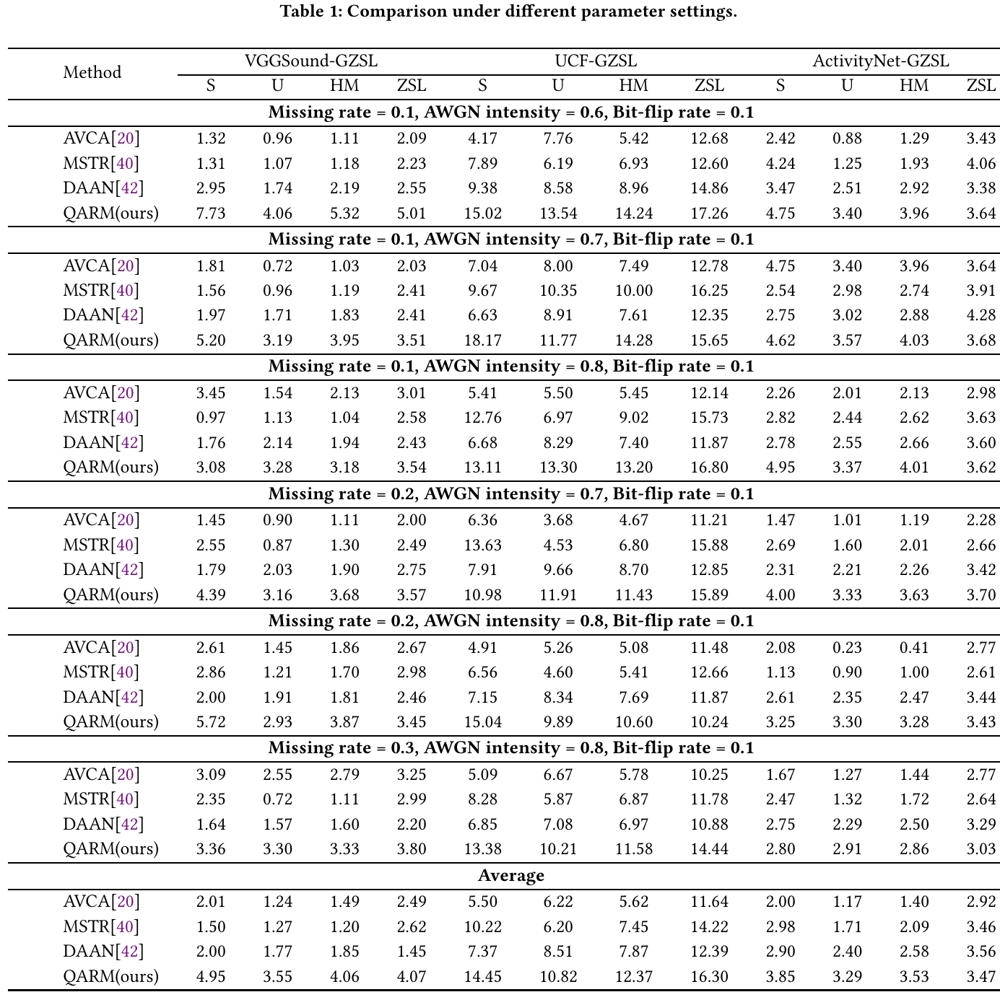
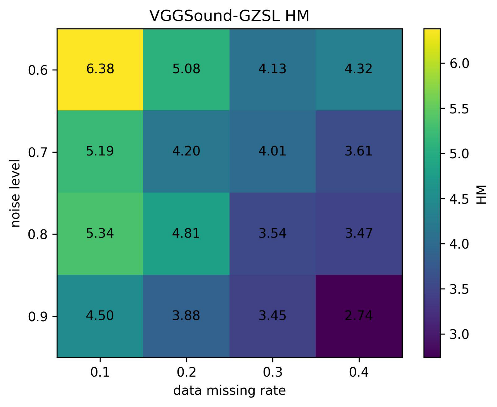
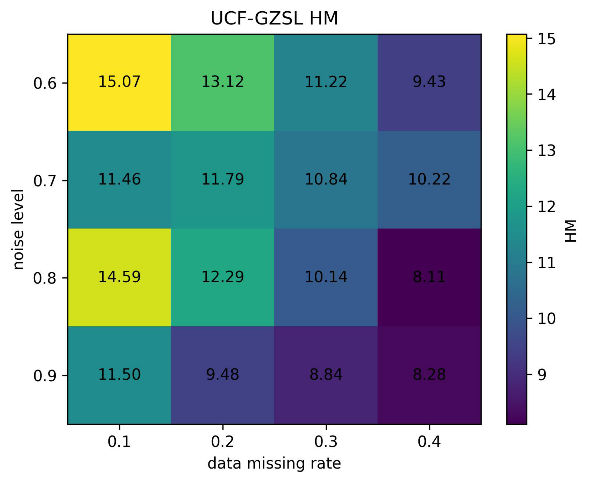
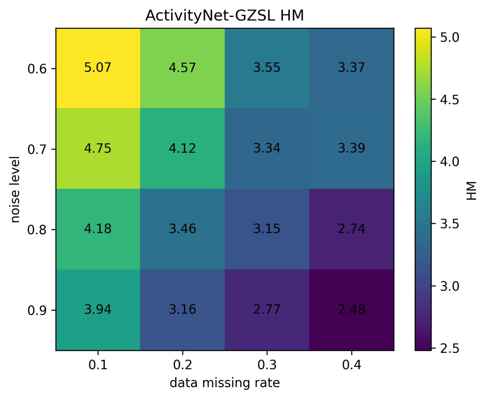

Intermediate audio and visual features may be incomplete or noisy before multimodal interaction starts.
Motivation

Intro figure. Standard training can suffer severe harmonic-mean degradation as missing rate increases, while modality balancing helps maintain robust performance under corrupted features.
The easier or less corrupted branch dominates optimization, leaving the other branch under-trained.
Seen-class learning signals become unreliable, which hurts semantic transfer to unseen classes.
Pipeline

Overall pipeline. OTDR performs mask prediction, latent alignment, INR completion, and residual refinement; SGDR monitors semantic sub-feature consistency to guide branch-wise regulation.
Method
Optimal-Transport-guided Denoising Reconstructor
OTDR aligns noisy latent distributions to clean latent geometry with optimal transport, then reconstructs features through INR-based completion and residual correction.

Semantic-Guided Diagnostic Relearning
SGDR clusters sub-features with HDBSCAN and computes IoU purity to diagnose branch learning states, making modality regulation less sensitive to raw corrupted activations.

Results
4.06
Average HM on VGGSound-GZSL
12.37
Average HM on UCF-GZSL
3.53
Average HM on ActivityNet-GZSL
16.35
HM when OTDR + SGDR transfer to MSTR

Robustness



Citation
@inproceedings{qarm2026,
title = {Robust Audio-Visual Generalized Zero-Shot Learning with Quality-Aware Representation Learning},
author = {Wang, Xingtao and Li, Linmao and Li, Wenrui and Zhao, Rui and Fan, Xiaopeng},
booktitle = {Proceedings of the ACM International Conference on Multimedia},
year = {2026}
}